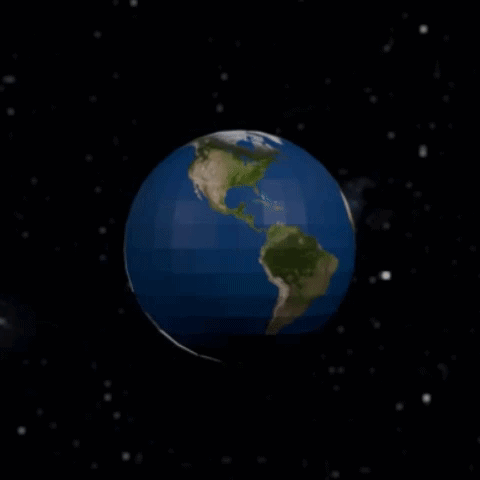
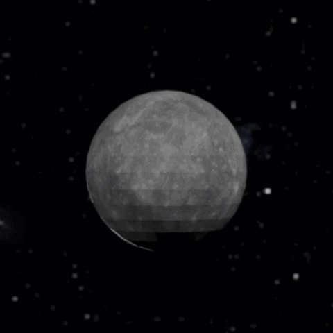
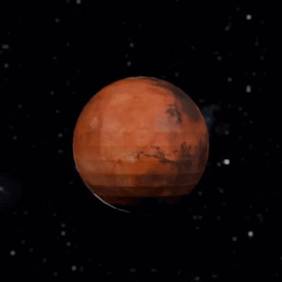
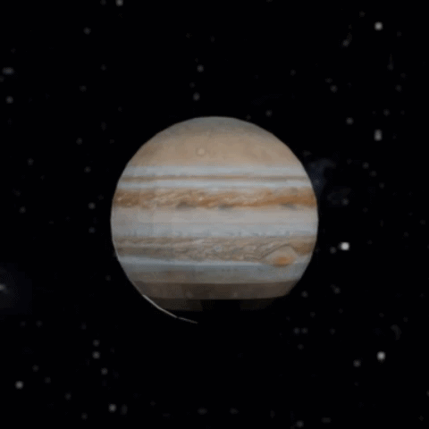
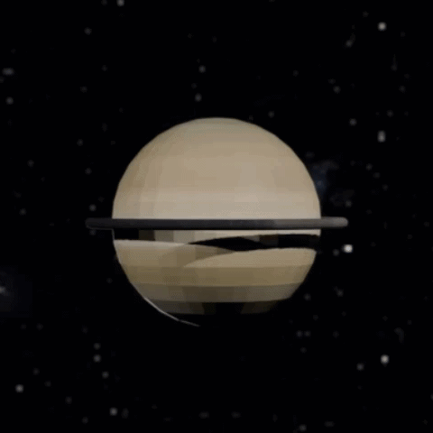
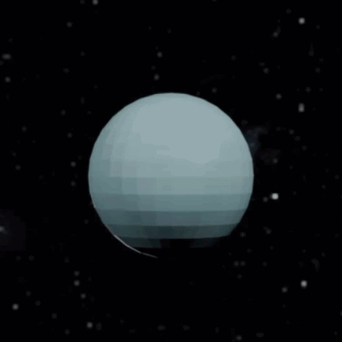
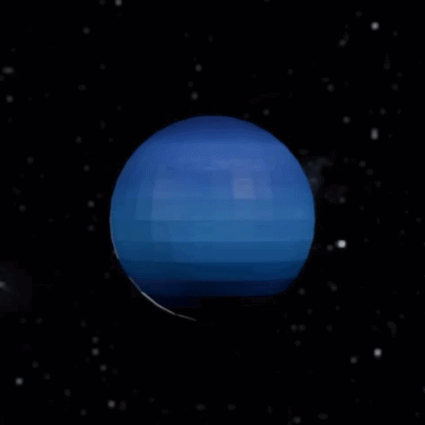
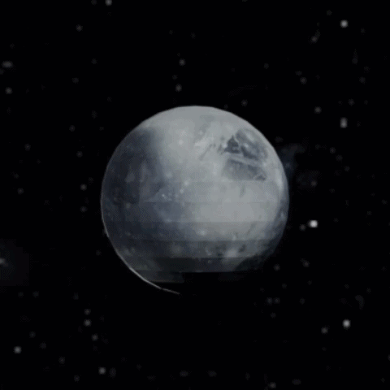

Revolution: 0 | Orbit: 365 ED / 1 EY | Sun Dist.: 1 AU

Revolution: 0
Orbit: 0.24 EY
Sun Dist.: 0.39 AU

Revolution: 0
Orbit: 0.615 EY
Sun Dist.: 0.72 AU

Revolution: 0
Orbit: 1.88 EY
Sun Dist.: 1.52 AU

Revolution: 0
Orbit: 11.86 EY
Sun Dist.: 5.20 AU

Revolution: 0
Orbit: 29.46 EY
Sun Dist.: 9.58 AU

Revolution: 0
Orbit: 84.02 EY
Sun Dist.: 19.18 AU

Revolution: 0
Orbit: 164.77 EY
Sun Dist.: 30.07 AU

Revolution: 0
Orbit: 247.94 EY
Sun Dist.: 39.48 AU
At the very heart of our solar system sits the Sun, a nearly perfect sphere of glowing hot plasma that provides the vital energy and light keeping our planet alive. It accounts for about 99.8% of the total mass in our solar neighborhood, exerting an immense gravitational pull that holds everything from the largest planets to the smallest asteroids firmly in their orbits. Deep inside its core, extreme temperatures and pressure fuse hydrogen atoms into helium in a process called nuclear fusion, generating a massive amount of energy that travels outward. Without this massive star radiating warmth across the vacuum of space, Earth would simply be a dark, frozen ball of rock completely incapable of supporting any life.
LAs the smallest planet in our solar system and the closest one to the Sun, Mercury is a fast-moving world that zips around its orbit in just 88 Earth days. Because it's so close to the Sun and lacks a real atmosphere to trap heat, it experiences some of the most extreme temperature swings in the solar system, going from a scorching 430°C during the day to a freezing -180°C at night. Its dusty, heavily cratered surface looks a lot like our Moon, bearing the scars of countless impacts over billions of years. Despite its harsh environment, this tiny planet holds fascinating secrets, including a massive iron core and traces of water ice hidden in deep, permanently shadowed craters.
Often called Earth's twin because of its similar size and structure, Venus is actually a completely different world hidden beneath a thick, toxic blanket of yellowish clouds. It takes the title of the hottest planet in our solar system because its heavy atmosphere traps the Sun's heat in a runaway greenhouse effect, pushing surface temperatures up to a blistering 475°C. Beneath those crushing clouds lies a harsh, volcanic landscape covered in towering mountains and vast plains of hardened lava. To make things even more unusual, Venus rotates backward on its axis incredibly slowly, which means a single day there actually lasts longer than its entire year.
Our home planet, Earth, is the third world from the Sun and the only place in the universe known to harbor life. Its surface is uniquely dominated by vast liquid water oceans that cover about 71% of the globe, creating a vibrant blue oasis against the dark backdrop of space. The dynamic atmosphere provides a perfect balance of nitrogen and oxygen while shielding the surface from harmful solar radiation and regulating the global climate. Underneath this bustling biosphere lies a restless interior with shifting tectonic plates and a churning liquid metal core that generates a protective magnetic shield.
As Earth's only natural satellite and our closest cosmic companion, the Moon hangs as a bright, comforting presence in our night sky. Its dusty surface is heavily cratered from billions of years of asteroid impacts and features dark, flat plains of ancient, hardened lava known as maria. The Moon's gravitational pull gently tugs on Earth, driving the ocean tides that circulate water across our globe and stabilizing our planet's axial tilt. Because it is locked in a synchronous rotation with Earth, we always see the exact same side, making the mysterious far side a major focus for modern space exploration.
Known as the "Red Planet," Mars is the fourth world from the Sun and has captivated humanity's imagination for generations. Its distinct rusty color comes from iron oxide, or rust, covering its dusty surface, which sits under a very thin, carbon dioxide-dominated atmosphere. Despite its dry and frozen appearance today, the planet is home to incredible geological features like Olympus Mons, the largest volcano in the solar system, and a massive canyon system called Valles Marineris. Scientists actively study Mars with rovers and orbiters to search for signs of ancient life, driven by evidence that liquid water once flowed across its now-barren plains.
Dominating our solar system as the largest planet by far, Jupiter is a massive gas giant so enormous that more than 1,300 Earths could fit inside it. Unlike the inner rocky worlds, it lacks a true solid surface and is made up almost entirely of thick, swirling layers of hydrogen and helium gas. Its most iconic feature is the Great Red Spot, a colossal storm larger than Earth itself that has been raging for centuries alongside a massive family of dozens of moons. Because of its incredible mass, Jupiter exerts a powerful gravitational pull that acts like a cosmic shield, pulling in stray comets and asteroids that might otherwise head toward the inner planets.
As the sixth planet from the Sun and the second-largest in our solar system, Saturn is a massive gas giant famous for its breathtaking and intricate ring system. These magnificent rings are not solid structures but are instead made of billions of individual chunks of water ice, rocks, and dust ranging in size from tiny grains to giant boulders. Because it is mostly made up of hydrogen and helium, this giant planet is incredibly light for its size, making it the only planet in our solar system that is less dense than water. Beyond its majestic rings, Saturn hosts a dynamic atmosphere with intense storms and over a hundred fascinating moons, including the massive, cloud-covered world of Titan.
Uranus is the seventh planet from the Sun and stands out as a unique ice giant that rotates completely on its side. This unusual 98-degree axial tilt means the planet essentially rolls around the Sun like a bowling ball, causing extreme seasons that last for decades. Its striking, pale blue-green color comes from methane gas in its atmosphere, which absorbs red light and reflects the cool blue tones we see from space. Beneath its chilly exterior of water, ammonia, and methane ices, this freezing world hosts a faint system of rings and a family of 28 distinct moons named after literary characters.
As the eighth and most distant planet from the Sun, Neptune is a cold, dark world swept by the most powerful winds in the solar system. Its brilliant azure color comes from methane in its dynamic atmosphere, which often features massive dark storms that dwarf our own planet's weather systems. Beneath those freezing outer cloud layers sits a dense, churning fluid of water, ammonia, and methane ices surrounding a heavy, rocky core. This enigmatic ice giant also possesses a faint ring system and is orbited by a family of 16 moons, including the icy Triton, which orbits the planet in the opposite direction of its rotation.
Pluto is a dwarf planet located in the outer reaches of our solar system, beyond the orbit of Neptune. Once considered the ninth planet, it was reclassified as a dwarf planet in 2006 by the International Astronomical Union. This icy world has a highly elliptical and tilted orbit, causing it to sometimes be closer to the Sun than Neptune. Pluto is known for its heart-shaped glacier and its large moon, Charon, which is roughly half the size of Pluto itself.
v.4.4.0
Planet textures downloaded from: solarsystemscope